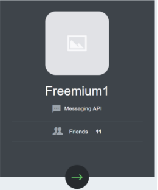
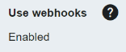
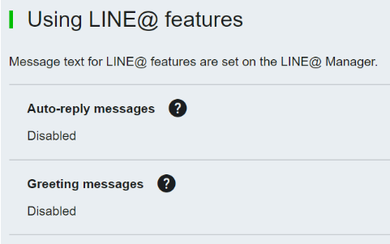
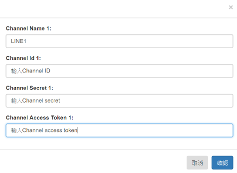
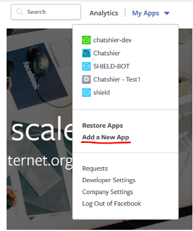
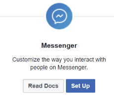
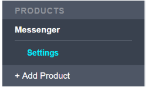
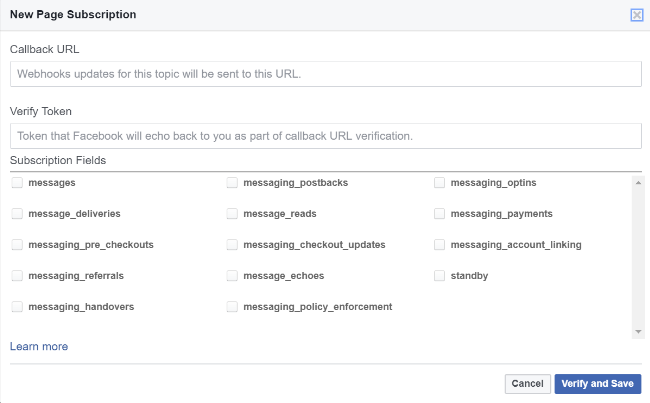
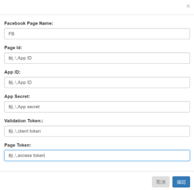

LINE串接
2 設定LINE群組
新增群組後頁面會自動帶入介面。點選群組下圖的綠色箭頭進入。
進入群組主畫面後取得Channel ID, Channel secret。
同頁面下方的Channel access token自行issue一組。
Channel ID, Channel secret跟Channel access token需要輸入在Chashier設定頁面。
3 設定Webhook

開啟Use webhooks(Channel access token下面)
下方的Webhook URL填入要連接到的伺服器並按下”update”
a. URL一定需要綁定SSL
b. Webhook名稱可以自訂，也可以直接打”/webhook”
* 建議把LINE@內建的功能都關掉，Chatshier 已經有提供一樣的服務。
取得Channel ID, Channel secret, Channel access token後在 Chatshier "設定頁面"下輸入資訊。下圖為範例。
Facebook串接
1 建立臉書粉絲頁
* 如果沒有粉絲專業可以點 這裡 查看流程。
2 臉書官方開發者頁面註冊
* 此帳號會跟臉書帳號綁定。
3 註冊登入後於右上方”My App”下拉選單點選”Add a New App”
* 新增的App要取名。

4 在主頁面新增Messenger設定。點選"Set Up"
5 左方目錄會出現Messenger的設定。

5.1 Messenger頁面的"Token Generation"選擇想要綁定的粉絲頁。設定完後會出現一組access token，點選token後會自動複製。
5.2 同頁面下方的Webhooks，點選”Setup Webhooks”。
5.3 填寫Callback URL。Verify Token輸入verify_token。Subscription Fields針對個人的需求勾選。
**注意**此步驟需要再伺服器在服務狀態時做設定才可以成功。詳細設定請參照影片教學。

Dashboard頁面取得App ID跟App secret。 Setting→Advanced頁面下取得Client token。 App ID(page ID), App secret, Client token, access token取得後在 Chatshier 設定頁面下輸入資訊。

按下"確認"後完成。